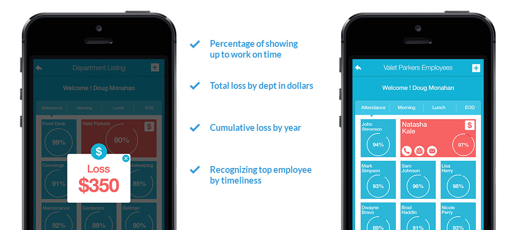

<!DOCTYPE html>
<html lang="en">
  <head>
    <meta charset="utf-8">
    <meta http-equiv="X-UA-Compatible" content="IE=edge">
    <meta name="viewport" content="width=device-width, initial-scale=1">
    <link href="https://fonts.googleapis.com/css?family=Lato:100,300,400,700" rel="stylesheet">
    <meta name="description" content="">
    <meta name="author" content="">
      
      

    <title>GeoClockin</title>
    <link href="https://getbootstrap.com/docs/3.3/dist/css/bootstrap.min.css" rel="stylesheet">
    <link href="https://getbootstrap.com/docs/3.3/assets/css/ie10-viewport-bug-workaround.css" rel="stylesheet">
    <link href="css/stilos.css" rel="stylesheet">
    <!--[if lt IE 9]><script src="../../assets/js/ie8-responsive-file-warning.js"></script><![endif]-->
    <script src="https://getbootstrap.com/docs/3.3/assets/js/ie-emulation-modes-warning.js"></script>
      
      <link href="https://getbootstrap.com/docs/3.3/assets/css/ie10-viewport-bug-workaround.css" rel="stylesheet">
<script src="http://code.jquery.com/jquery-1.10.1.min.js"></script>	
<link rel="stylesheet" href="http://www.justinaguilar.com/animations/css/animations.css">	

    <!-- HTML5 shim and Respond.js for IE8 support of HTML5 elements and media queries -->
    <!--[if lt IE 9]>
      <script src="https://oss.maxcdn.com/html5shiv/3.7.3/html5shiv.min.js"></script>
      <script src="https://oss.maxcdn.com/respond/1.4.2/respond.min.js"></script>
    <![endif]-->
  </head>

  <body>

    <div class="container">

      <!-- Static navbar -->
      <nav class="navbar navbar-default">
        <div class="container-fluid">
          <div class="navbar-header">
            <button type="button" class="navbar-toggle collapsed" data-toggle="collapse" data-target="#navbar" aria-expanded="false" aria-controls="navbar">
              <span class="sr-only">Toggle navigation</span>
              <span class="icon-bar"></span>
              <span class="icon-bar"></span>
              <span class="icon-bar"></span>
            </button>
            <a class="navbar-brand" href="index.html"></a>
          </div>
          <div id="navbar" class="navbar-collapse collapse">
            <ul class="nav navbar-nav">
              <li><a href="overview.html">The Team</a></li>
              <li><a href="about.html">about us</a></li>
                <li><a href="techcnology.html">tecnology</a></li>
              <li><a href="pricing.html">Pricing</a></li>
              <li><a href="contact_us.html">Contact Us</a></li>
            </ul>
              <ul class="nav navbar-nav navbar-right">
              <li class="active"><a href="./">Sing up <span class="sr-only">(current)</span></a></li>
              <li class="red"><a href="login.html">Login</a></li>
            </ul>
          </div><!--/.nav-collapse -->
        </div><!--/.container-fluid -->
      </nav>

     
    </div> <!-- /container -->
      
    <div id="inicio">
        <div class="left begin active">
            <h1>Verifying Hourly WorkersWages through <strong>BioTechnology</strong></h1>
            <p>Our software will pay for itself the first month</p>
            
        </div>
        <div class="clear"></div>
    </div>  
    
    <div id="white">
        <h3><strong>Increase</strong> Productivity and Attendance</h3>
        <h5>GEOClockIn keeps things accessible and easy to manage</h5>
        <ul id="ver">
            <li class="active op_1">
                
                <h2>Verify & Validate Worked Hours</h2>
                <strong>Time card systems can be tricked – not ours</strong>
                <p>Our mission is not replacing your current time card system – keep it – but verify all hours claimed.</p>
            </li>
            <li class="active op_1">
                
                <h2>Track Employee Smoke Breaks</h2>
                <strong>Smoking can kill – your profits</strong>
                <p>Cigarette smokers will walk outside and smoke a cigarette every hour on the hour and can wind up spending several hours each day – wasting time.</p>
            </li>
            <li class="active op_1">
                
                <h2>Recognize the Honest Employees</h2>
                <strong>Not everybody is lying and stealing</strong>
                <p>Let us help you in recognizing and rewarding those employees who are showing up to work on time and doing their job as scheduled. </p>
            </li>
            <li class="active op_1">
                
                <h2>See Who Is At Work via Phone</h2>
                <strong>Instantly determine who is at your offices</strong>
                <p>No need to call the HR department, check time cards or walk throughout the facility trying to determine if someone is actually on the premises.</p>
            </li>
            <li class="active op_1">
                
                <h2>Determine Losses by Department</h2>
                <strong>Accurate tracking of time losses</strong>
                <p>Have a software system that will keep track of every minute an employee says he/she is at work when they actually are not. It gives you a dollar report by time period.</p>
            </li>
            <li class="active op_1">
                
                <h2>Interacts with All Payroll Systems</h2>
                <strong>ADP Payroll and all other work with us</strong>
                <p>GEOClockIn® is not meant to eliminate your current systems, but to augment the information they provide.</p>
            </li>
        </ul>
        <div class="sep"><a href="#inicio"></a></div>
    </div>  
      
    <div id="provides">
        <div id="prov" class="left active">
            In a busy kitchen, with meals flying, people moving, can you really keep 
track of who is at work on time?
<strong>GEOClockIn®</strong> keeps track of your 
hourly workers.
        </div>
        <div class="clear"></div>
    </div>
      
    <div id="share">
        <h3><strong>Why</strong> GEOClockIn®?</h3>
        <h5>Increases worker productivity and attendance, and reduces company’s loss.</h5> 
        <h5><strong>Stop Being Cheated by Hourly Workers</strong></h5>
        <p>Believing that people are saints won’t do you any good.  
And if you believe that all of your hourly workers who “show up” to work on time are actually there – you may be pretty much wrong.  
But, if you believe that many of your employees “buddy punch” their friends into work – then you are more than right. <br /><br /> 
As a result of it, your company is losing thousands of dollars a month – be happy if it isn’t more – but we have a solution to fix it.</p>
    </div>   
     
      <div id="watch">
        
        <h3>Seeing is Believing. Watch our Technology in Action.</h3>
        <p>Take a few moments to watch the GEOSafety video. It will demonstrate how your iPhone, iPad, Android or Android tablet will be turned into your own personal security system. Using predetermined times where passwords must be entered in order to turn off the GEOSafety 
notification features - no matter where you are - help can be on the way.<br /><br />

GEOSafety is one of the many personal security apps created by GEOValid - the world’s leader in biometric technology.
</p>
    </div> 
      
      
      <div id="clock">
        <div class="right clk active">
            <strong>Clock In / Clock Out</strong>    
            <p>The classic time card system enables the employees to have their colleagues check them in when they are late for work, and even check them out when they have left earlier. <br /><br />

By using sophisticated facial recognition technology, GEOClockIn® empowers the companies to keep better track of the hourly workers, by having them ClockIn every time they enter the company and ClockOut when they leave, verifying they are who they claim they are, thus saving the company lots of money.</p>   
        </div>
        <div class="clear"></div>  
      </div>
      
      
      
      
    <div id="mantain">
        <div id="man" class="right active">
            eliminates employees having their friend punch them in or out
        </div> 
        <div class="clear"></div>
    </div> 
      
     
      
    <div id="panic">
        <div id="pan" class="left active">
        <strong>Employee Locator</strong>    
            <p>You want to know where your employees are at a certain moment, but in order to do that you have to go around the hallways, checking every office. <br /><br />
The GEOClockIn® app is a perfect solution for you, because it contains the Employees Locator feature, which provides information regarding the location of your employees at any time while they are working. </p>      
        </div>  
        <div class="clear"></div>
    </div> 
      
    <div id="connect">
        <div id="con" class="right active">
            Are your employees showing up to work on time, staying throughout the day?
        </div>
        <div class="clear"></div>
    </div> 
      
    <div id="tabs">
        
       <div class="tabs">
    
           <div class="tab">
               <input type="radio" id="tab-1" name="tab-group-1" checked>
               <label for="tab-1">Detailed Loss Report</label>

               <div class="content">
                   <h5><strong>Detailed Loss</strong> Report</h5>
                   <h6>Detailed loss report by employee, department and entire company of fake time card punches.</h6>
                   
               </div> 
           </div>

           <div class="tab">
               <input type="radio" id="tab-2" name="tab-group-1">
               <label for="tab-2">Automatic Notifications</label>

               <div class="content">
                   <div class="left">
                    
                   </div>
                   <div class="right">
                    <h5><strong>Automatic</strong> Notifications</h5>
                   <h6>140 years of security history</h6>
                       <p>Should you forget to set your alarm clock, GEOClockIn® won’t let you be late for work. By using sophisticated technologies, the app immediately notifies the employee every time he/she is late, thus avoiding being less paid or reprimanded.<br /><br />
Additionally, GEOClockIn® sends notifications every time you spend more time for lunch than the allocated break, therefore making sure that you are back on your working place on time. All in one, GEOClockIn® notifies you immediately if you arrive later, leave earlier, use longer breaks or if your attendance at work is low.</p>
                   </div>
               </div> 
           </div>

            <div class="tab">
               <input type="radio" id="tab-3" name="tab-group-1">
               <label for="tab-3">Payroll Integration</label>

               <div class="content">
                   <div class="left">
                   <h5>Payroll <strong>Integration</strong></h5>
                   <h6> Only you are aware the event is being broadcasted and recorded</h6>
                       <p>In keeping your profits high, you should consider a payroll system, because payroll is not only about paying your employees. GEOClockIn®, as an app which is based on the latest biometric technologies, integrates with popular payroll systems such as ADP, thus offering:<br /><br />
- Reductions in time, money and efforts spent on payroll administrations;<br />
- Giving the employees their payroll in their hands no matter of their location;<br />
- Increased cost savings and security;<br />
- Better Human Resource Management;<br />
- Easy access and easy to manage.</p>
                   </div>
                   <div class="right">
                    
                   </div>
               </div> 
           </div>

        </div>

      
    </div> 

    <div id="watch">
        <h3>Save Money and Improve Your Productivity </h3>
        <p>Many companies face losses as a result of the “buddy punch-in” that most of the employees practice. The struggle is everlasting and that’s why we offer GEOClockIn®. GEOClockIn is originally developed to help these companies get rid of this problem by providing a solution which will augment the classic time card system, thus preventing “buddy punch-in”. <br /><br />
Using the latest biometric technologies GEOClockIn® empowers you to boost your company’s profits, identify the honest, hard workers and quickly and easily determine the employees’ salaries.
</p>
    </div> 
      
      
    <div id="white">
        <h3><strong>Smart</strong> Plans for Everyone!</h3>
        <h5>Smart Pricing Tailored for Your Needs</h5> 
        <div class="spacio">
            <ul>
                <li class="gris">
                    <h6>Bronze</h6>
                    <h2><sup>$</sup>20<sub>/mo.</sub></h2>
                    <div class="clear"></div>
                    <p>3 Months</p>
                    <div class="get">Get started</div>
                </li>
                   <li class="gris">
                        <h6>Silver</h6>
                        <h2><sup>$</sup>18<sub>/mo.</sub></h2>
                        <div class="clear"></div>
                        <p>6 Months</p>
                        <div class="get">Get started</div>
                    </li>
                <li class="rojo">
                        <h6>Gold</h6>
                        <h2><sup>$</sup>15<sub>/mo.</sub></h2>
                        <div class="clear"></div>
                        <p>12 Months</p>
                        <div class="get">Get started</div>
                    </li>
            </ul>
        </div>
    </div>  
      
    <footer>
        <ul>
            <h6>About</h6>
            <li>Company</li>
            <li>Meet The Team</li>
            <li>News & Updates</li>
        </ul> 
        <ul>
            <h6>pricing and ordering</h6>
            <li>Pricing</li>
            <li>Ordering</li>
            <li>Login to change plan</li>
        </ul> 
        <ul>
            <h6>solutions</h6>
            <li>GEOClockIn</li>
            <li>GEOSafety</li>
            <li>GEOTrax</li>
            <li>GEOTrax</li>
        </ul> 
        <ul>
            <h6>lastest news</h6>
            <a class="twitter-timeline" data-height="200" data-theme="dark" data-link-color="#333" href="https://twitter.com/TwitterDev?ref_src=twsrc%5Etfw">Tweets by TwitterDev</a> <script async src="https://platform.twitter.com/widgets.js" charset="utf-8"></script>
        </ul> 
        <ul class="touch">
            <h6>get in touch</h6>
            
        </ul> 
    </footer>
    <div id="firma">
        <div class="left">
            © 2015 GEOValid. All Rights Reserved. Powered by <strong>Daybreak</strong>
        </div>  
        <div class="right">
                <a href="#">FAQ</a> | <a href="#">Terms of Service</a> | <a href="#">Privacy Policy</a>
        </div>
        <div class="clear"></div>
    </div>  
      
      
    <script>
        
    $(window).scroll(function() {
		$('#inicio').each(function(){
		var imagePos = $(this).offset().top;

		var topOfWindow = $(window).scrollTop();
			if (imagePos < topOfWindow+40) {
				$('.begin').removeClass("active");
				$('.begin').addClass("pullUp");
			}
		});
	}); 
        
    $(window).scroll(function() {
		$('#ver').each(function(){
		var imagePos = $(this).offset().top;

		var topOfWindow = $(window).scrollTop();
			if (imagePos < topOfWindow+400) {
				$('.op_1').removeClass("active");
				$('.op_1').addClass("fadeIn");
			}
		});
	});     
        
        
	$(window).scroll(function() {
		$('#provides').each(function(){
		var imagePos = $(this).offset().top;

		var topOfWindow = $(window).scrollTop();
			if (imagePos < topOfWindow+200) {
				$('#prov').removeClass("active");
				$('#prov').addClass("pullUp");
			}
		});
	});
    
    
       $(window).scroll(function() {
		$('#clock').each(function(){
		var imagePos = $(this).offset().top;

		var topOfWindow = $(window).scrollTop();
			if (imagePos < topOfWindow+400) {
				$('.clk').removeClass("active");
				$('.clk').addClass("pullUp");
			}
		});
	}); 

        $(window).scroll(function() {
		$('#mantain').each(function(){
		var imagePos = $(this).offset().top;

		var topOfWindow = $(window).scrollTop();
			if (imagePos < topOfWindow+400) {
				$('#man').removeClass("active");
				$('#man').addClass("pullUp");
			}
		});
	}); 
        
        $(window).scroll(function() {
		$('#panic').each(function(){
		var imagePos = $(this).offset().top;

		var topOfWindow = $(window).scrollTop();
			if (imagePos < topOfWindow+400) {
				$('#pan').removeClass("active");
				$('#pan').addClass("pullUp");
			}
		});
	}); 
        
     $(window).scroll(function() {
		$('#connect').each(function(){
		var imagePos = $(this).offset().top;

		var topOfWindow = $(window).scrollTop();
			if (imagePos < topOfWindow+400) {
				$('#con').removeClass("active");
				$('#con').addClass("pullUp");
			}
		});
	});     
     
        
</script>

    <!-- Bootstrap core JavaScript
    ================================================== -->
    <!-- Placed at the end of the document so the pages load faster -->
    <script src="https://ajax.googleapis.com/ajax/libs/jquery/1.12.4/jquery.min.js"></script>
    <script>window.jQuery || document.write('<script src="../../assets/js/vendor/jquery.min.js"><\/script>')</script>
    <script src="https://getbootstrap.com/docs/3.3/dist/js/bootstrap.min.js"></script>
    <!-- IE10 viewport hack for Surface/desktop Windows 8 bug -->
    <script src="https://getbootstrap.com/docs/3.3/assets/js/ie10-viewport-bug-workaround.js"></script>
  </body>
</html>